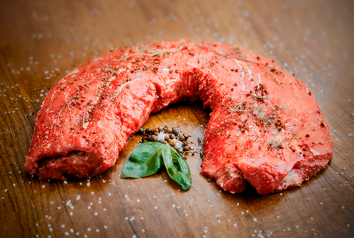
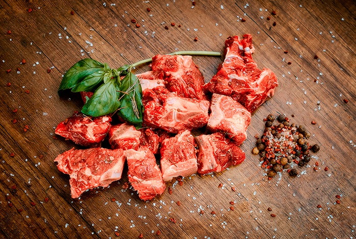
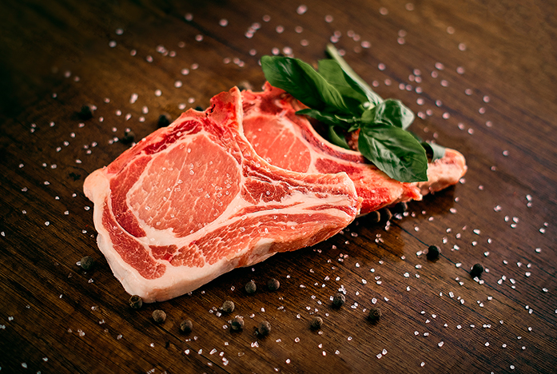

Lomo Fino Detalle
Corte noble ubicado en la región sub lumbar del bovino perteneciente al cuarto trasero del animal. Corte muy apetecido a nivel gastronómico por la suavidad del mismo.
Solicitar cotización 


Lomo de Falda Detalle
Corte noble ubicado en la región dorso lumbar del bovino perteneciente al cuarto trasero del animal.
Solicitar cotización


Hueso Carnudo Detalle
Corte formada por la estructura ósea de las costillas,brazos, piernas, vértebras y los músculos intercostales internos y externos del bovino
Solicitar cotización

Goulash Especial Detalle
Carne de vacuno corte goulash corresponde a un producto derivado de cortes post formado de lo cual se obtiene trocitos de 2.5com x 2.5cm x 1.5 cm aprox. el formato es ideal para preparar
Solicitar cotización
Pulpa de Cerdo Detalle
Corresponde a la pierna de cerdo deshuesada y desgrasada compuesta por cinco cortes unidos.
Solicitar cotización

Costilla de ResDetalle
Corte formada por la estructura ósea de las costillas y los músculos intercostales internos y externos del bovino.
Solicitar cotización


Chuleta de Cerdo Detalle
Es un corte porcino obtenido de la región dorsal del cerdo, constituido por el lomo falda, una capa superficial de grasa y la región ósea correspondiente al espinazo del animal.
Solicitar cotización
Chuleta de Res Detalle
Corresponde al corte efectuado a continuación de la cabeza del animal, partiendo de la articulación occipital hasta la cuarta vértebra cervical.
Solicitar cotización